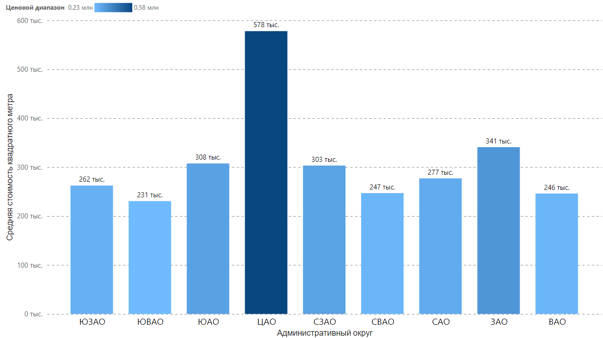

Средняя стоимость квадратного метра в зависимости от количества комнат
В разрезе количества комнат самая высокая средняя стоимость квадратного метра у семиэтажных квартир – 718 тысяч рублей, самая низкая у студий – 266 тысяч

Самая высокая средняя стоимость квадратного метра в центральном административном округе – более 570 тысяч рублей, самая низкая - в юго-восточном административном округе – чуть более 230 тысяч рублей
В разрезе количества комнат самая высокая средняя стоимость квадратного метра у семиэтажных квартир – 718 тысяч рублей, самая низкая у студий – 266 тысяч
Самые высокие дома в западном административном округе - среднее значение равняется почти 24 этажам, самые низкие – в восточном административном округе – среднее значение 17,5 этажей

В восточном административном округе самая высокая средняя стоимость квадратного метра наблюдается в районе Сокольники – 295 тысяч рублей, самая низкая – в районе Ивановское – 210 тысяч рублей

В западном административном округе самая высокая средняя стоимость квадратного метра наблюдается в районе Дорогомилово – 490 тысяч рублей, самая низкая – в районе Ново-Переделкино – 216 тысяч рублей

В северном административном округе самая высокая средняя стоимость квадратного метра наблюдается в районе Беговой – 365 тысяч рублей, самая низкая – в районе Молжаниновский – 158 тысяч рублей

В северо-восточном административном округе самая высокая средняя стоимость квадратного метра наблюдается в районе Алексеевский – 319 тысяч рублей, самая низкая – в районе Ярославский – 189 тысяч рублей

В северо-западном административном округе самая высокая средняя стоимость квадратного метра наблюдается в районе Хорошёво-Мнёвники – 338 тысяч рублей, самая низкая – в районе Митино – 207 тысяч рублей

В центральном административном округе самая высокая средняя стоимость квадратного метра наблюдается в районе Хамовники – 888 тысяч рублей, самая низкая – в районе Красносельский – 409 тысяч рублей

В южном административном округе самая высокая средняя стоимость квадратного метра наблюдается в районе Даниловский - 365 тысяч рублей, самая низкая – в районе Бирюлёво Восточное – 178 тысяч рублей

В юго-восточном административном округе самая высокая средняя стоимость квадратного метра наблюдается в районе Южнопортовый – 299 тысяч рублей, самая низкая – в районе Капотня – 185 тысяч рублей

В юго-западном административном округе самая высокая средняя стоимость квадратного метра наблюдается в районе Гагаринский – 393 тысячи рублей, самая низкая – в районе Южное Бутово – 206 тысяч рублей